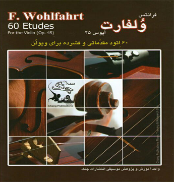

|
ویلونیست ایرانی وبلاگ تخصصی ساز ویولن درباره ما  کتب و نرم افزارهای موسیقی تکنوازی و همنوازی ویلون مطالب آموزشی ، کلیپ به همراه نت آهنگ های ایرانی و خارجی نویسنده : علیرضا مطالب اخیر
آرشیو
نویسندگان دوشنبه 17 آذر 1399 :: نویسنده : علیرضا
کتاب های « اول و دوم دستور مقدماتی سه تار هنرستان موسیقی روح الله خالقی»  کتاب دستور مقدماتی تار و سه تار، کتاب اول و دوم هنرستان که سالیان گذشته توسط موسی معروفی و نصرالله زرینپنجه تهیه شده و گردآوری و تنظیم آنها توسط روح الله خالقی، رئیس وقت هنرستان موسیقی ملی، صورت گرفته بود، با بازنگری هوشنگ ظریف توسط مؤسسهی ماهور انتشار یافته است. از آنجا که آموزش موسیقی و ساز بدون شنیدن امری غیرمعقول و تقریباً ناشدنی به نظر می رسد، این مجموعه شامل چهار سیدی برای اجرای درسها و همچنین توضیحات مربوطه، برای سه تار، با اجرای حسین علیزاده تدوین شده است. این کتاب اولین قدم هر فرد برای آموزش سه تار میباشد که با بازنگری هوشنگ ظریف از کتاب دستور مقدماتی تار و سه تار مشتق شده و در دو جلد ارائه شده است.  - نوع مطلب : کتاب تار و سه تار، برچسب ها : دانلود کتاب تار هنرستان، آموزش تار و سه تار، خرید کتاب آموزش تار و سه تار، دانلود کتاب آموزش تار و سه تار، دانلود کتاب اولیه تار و سه تار، دانلود رایگان کتاب سه تارخالقی، کتاب اول دستور مقدماتی تارکتاب اول دستور مقدماتی سه تارکتاب دوم دستور مقدماتی سه تارکتاب دوم دستور مقدماتی تارخرید کتاب سه تار خالقیخرید کتاب تار خالقیدانلود کتاب صوتی سه تار خالقیدانلود کتاب صوتی تار خالقیکتاب صوتی آموزش تار هنرستانکتاب صوتی آموزش سه تار هنرستان، لینک های مرتبط : سه شنبه 11 آذر 1399 :: نویسنده : علیرضا
کتاب «18 قطعه پیش درآمد برای ویلون»  اگر شما هم به موسیقی اصیل ایرانی علاقه مند هستید پیشنهاد میکنم این کتاب رو حتما داشته باشید! این کتاب شامل نت های پیش درآمدهای موسیقی ایرانی و نوازندگی هنرمند آزاده شمس با همراهی تار و پیانو میباشد. 18 قطعه پیش درآمد برای ویلون، توسط لطف الله مفخم گردآوری شده است که نت ها نوشته اساتید موسیقی ایرانی همچون ابولحسن صبا، حسین یاحقی، روح الله خالقی، موسی معروفی و چند تن دیگر میباشد. پیشنهاد من این است حتما نمونه های صوتی را دانلود و گوش دهید تا از موسیقی ایرانی لذت ببرید، فراموش نکنید نوازندگی نیاز به تلاش مستمر و منابع خوب دارد، بلاشک این کتاب یکی از بهترین ها در زمینه موسیقی ایرانی میباشد. فهرست نت قطعات کتاب « 18 قطعه پیش درآمد ویولن »
به همراه نوازندگی این 18 قطعه توسط استاد هنرمند آزاده شمس - نوع مطلب : کتاب های ویلون، آموزش ویلون، برچسب ها : کتاب 18 قطعه پیش درآمد ویلون، پیش درآمد موسیقی ایرانی، یادگیری دستگاه های موسیقی، خریدکتاب18قطعه پیش درآمد ویلون، آموزش پیش درآمدهای ویلون، کتاب صوتی آموزش ویلون، دانلود رایگان آموزش ویلن ایران، لینک های مرتبط : دوشنبه 10 آذر 1399 :: نویسنده : علیرضا
کتاب «آموزش ویلون در موسیقی ایرانی»  کتاب آموزش ویلون در موسیقی ایرانی اثر محمد بهارلو که یکی از شاگردان استاد بی بدیل موسیقی ایرانی، ابولحسن صبا بود، یکی از اصلی ترین کتاب های آموزش ویولن ایرانی در زمان پهلوی می باشد. این کتاب برای آن دسته از عزیزانی که تمابل دارند ویلون ایرانی را یاد بگیرند در کنار کتاب های روح الله خالقی توصیه می شود (سطح کتاب: مبتدی) - نوع مطلب : آموزش ویلون، کتاب های ویلون، برچسب ها : کتاب ویلون موسیقی ایرانی، محمد بهارلو، دانلود ویلون ایرانی، آموزش موسیقی اصیل، کتاب PDF ویلون محمد بهارلو، خودآموز موسیقی ایرانی، خرید کتاب آموزش ویلون ایرانی، لینک های مرتبط : یکشنبه 9 آذر 1399 :: نویسنده : علیرضا
کتاب «60 اتود ولفارت برای ویلون، اپوس 45»  این کتاب شامل 60 اتود ویلون می باشد که توسط ویلونیست برجسته آلمانی، ولفارت در آلمان برای آموزش حرفه ای ویلون نوشته شده است، این کتاب در کنار اتود کایزر برای کسانی که به یادگیری ویلون کلاسیک و اتود آن ها علاقه دارند و دوست دارند به سبک ویلونیست های اروپایی روح نواز بنوازند، توصیه می کنم... - نوع مطلب : آموزش ویلون، کتاب های ویلون، برچسب ها : اتود ویلون ولفارت، آموزش اتود ویلون، آموزش حرفه ای ویلون کلاسیک، کتاب 60 اتود ولفارت اپوس 45، خرید کتاب ویلون ولفارت، دانلود رایگان اتود ولفارت، آموزش ویلون خودآموز، لینک های مرتبط : شنبه 8 آذر 1399 :: نویسنده : علیرضا
کتاب « 36 اتود کایزر اپوس 20»  این کتاب شامل 36 اتود ویلون می باشد که توسط موسیقی دان برجسته کایزر آلمانی در اروپا برای آموزش حرفه ای ویلون نوشته شد، این کتاب را برای کسانی که به یادگیری ویلون کلاسیک و اتود آن ها علاقه دارند و دوست دارند به سبک ویلونیست های اروپایی بنوازند، توصیه می کنم... (3 مجموعه در یک کتاب به همراه نسخه صوتی برای یادگیری بهتر) - نوع مطلب : کتاب های ویلون، آموزش ویلون، برچسب ها : کتاب صوتی و PDF اتود کایزر، آموزش اتود کایزر ویلون، آموزش ویلون، کتاب آموزش ویلون کلاسیک، کتاب صوتی آموزش ویلون، خرید کتاب کایزر اپوس 20، دانلود کتاب کایزر اپوس 20، لینک های مرتبط : پنجشنبه 11 اردیبهشت 1399 :: نویسنده : علیرضا
کتاب صوتی و PDF «وقتی نیچه گریست» اثر اروین د.یالوم ترجمه سپیده حبیب با صدای آرمان سلطان زاده  وقتی نیچه گریست (به انگلیسی: When Nietzsche Wept) یکی از نامدارترین رمانهای روانشناختیِ اروین د یالوم است که در سال ۱۹۹۲ به زبان انگلیسی نوشته شد. اروین د یالوم روانپزشکِ هستیگرا (اگزیستانسیالیست)، استاد بازنشستهٔ روانپزشکی در دانشگاه استنفورد و نویسندهٔ شماری از نامدارترین رمانهای روانشناختی است. این رمان دیدار خیالیِ فریدریش نیچه، فیلسوف آلمانی، و یوزف برویر، پزشکِ وینی، را روایت میکند. رویدادهای رمان در سال ۱۸۸۲ در شهر وینِ اتریش رخ میدهند و این رمان در واقع روایتی است از تاریخِ برهمکنشِ فلسفه و روانکاوی و رویارویی خیالی برخی از مهمترین چهرههای دهههای پایانی قرن نوزدهم همچون فریدریش نیچه، یوزف برویر و زیگموند فروید. در سال ۲۰۰۷ فیلمی با همین نام (به انگلیسی: When Nietzsche Wept) به کارگردانی Pinchas Perry با اقتباس از این رمان ساخته شده است. از این رمان تاکنون ۴ ترجمه به زبان فارسی منتشر شده است. نسخه ای که هم اکنون جهت دانلود قرار داده شده دارای بهترین ترجمه (مترجم:سپیده حبیب) و صدای بسیار زیبا و دلنشین جناب آقای آرمان سلطان زاده میباشد. نوع مطلب : کتاب روانشناسی، برچسب ها : کتاب روان شناسی، دانلود کتاب وقتی نیچه گریست، دانلود کتاب صوتی وقتی نیچه گریست، دانلود کتاب اروین د یالوم، دانلود رایگان کتاب صوتی، کتاب روان شناختی، رمان خواندنی، لینک های مرتبط : دوشنبه 2 اردیبهشت 1398 :: نویسنده : علیرضا
PDF کتاب «دریاچه قو - Swan Lake»  45 قطعه کلاسیک و آسان برای ویولن که در کنار تمرینات کتاب های Le violon میتواند بسیار مثمر ثمر باشد، این آهنگ ها جزء آهنگ های معروف و بعضا فولکلور اروپایی میباشد و میتواند نوآموزان را از یکنواختی و بی آهنگی تمرینات کتاب های آموزشی برهاند، برای دانلود این کتاب روی لینک زیر کلیک کنید... - نوع مطلب : آموزش ویلون، کتاب های ویلون، برچسب ها : نت آهنگ های کلاسیک، Swan lake violin، دانلود کتاب دریاچه قو ویولن، خرید کتاب دریاچه قو، دریاچه قو، کتاب نت ویولن، کتاب آموزش ویولن، لینک های مرتبط : دوشنبه 28 آبان 1397 :: نویسنده : علیرضا
قطعه ای هیجان انگیز با نام " Misirlu " از دیوید گرت از دستش ندید، ارزش شنیدن داره  نوع مطلب : آثار کلاسیک اروپایی، برچسب ها : قطعه هیجان انگیز " Misirlu " از دیوید گرت، میسیرلو، آهنگ میسیرلو، آهنگ Misirlu، ویولن کلاسیک، ویولن شاد، ویولن هیجان انگیز، لینک های مرتبط : جمعه 18 آبان 1397 :: نویسنده : علیرضا
« PDF کتاب های ردیف اول، دوم و سوم ویولن ابولحسن صبا »    نوع مطلب : آموزش ویلون، کتاب های ویلون، برچسب ها : PDF کتاب های ردیف اول و دوم و سوم ویولن ابولحسن صبا، کتاب PDF ردیف اول ویولن ابولحسن صبا، کتاب PDF ردیف دوم ویولن ابولحسن صبا، کتاب PDF ردیف سوم ویولن ابولحسن صبا، آموزش ویولن ایرانی، آموزش ویولن سنتی و اصیل ایران، دانلود رایگان کتاب ردیف اول ابولحسن صبا، لینک های مرتبط : یکشنبه 13 آبان 1397 :: نویسنده : علیرضا
PDF کتاب «Le Violon 3»  توجه داشته باشید که در ایران تمرینات تمامی کتاب های Le violon از روی کتاب اصلی آن ترجمه و چاپ شده اند و یکی هستند، تنها ناشرین و بعضا مترجمین آن ها متفاوت هستند(انتشارات سوره ، چنگ و ...) - نوع مطلب : آموزش ویلون، کتاب های ویلون، برچسب ها : کتاب پی دی اف Le Violon 3، کتاب های ماتیو کریک بوم، کتاب آموزش ویولن کلاسیک، کتاب ل ویولن 3، PDF کتاب ل ویولن 3، دانلود رایگان کتاب Le violon 3، خرید کتاب Le violon 3، لینک های مرتبط : یکشنبه 13 آبان 1397 :: نویسنده : علیرضا
- نوع مطلب : آموزش ویلون، کتاب های ویلون، برچسب ها : PDF کتاب «دستور مقدماتی ویولن 4» اثر روح الله خالقی، دانلود رایگان PDF کتاب «دستور مقدماتی ویولن 4» اثر روح الله خالقی، کتاب چهارم ویلون هنرستان موسیقی، دانلود دستور مقدماتی ویولن 4، دانلود یادگیری ویولن ایرانی، خرید خود آموز ویولن ایرانی، خرید کتاب های روح الله خالقی، لینک های مرتبط : شنبه 12 آبان 1397 :: نویسنده : علیرضا
- نوع مطلب : آموزش ویلون، کتاب های ویلون، برچسب ها : PDF کتاب «دستور مقدماتی ویولن 3» اثر روح الله خالقی، دانلود رایگان PDF کتاب «دستور مقدماتی ویولن 3» اثر روح الله خالقی، دانلود خودآموز ویلون ایرانی، دانلود یادگیری ویولن ایرانی، دانلود دستور مقدماتی ویولن 3، کتاب سوم ویلون هنرستان موسیقی، لینک های مرتبط : موضوعات
پیوندهای روزانه پیوندها صفحات جانبی آمار
|
||
|
|